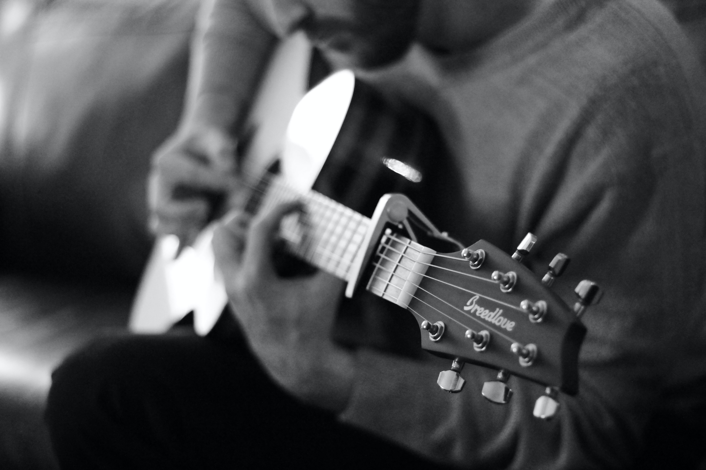
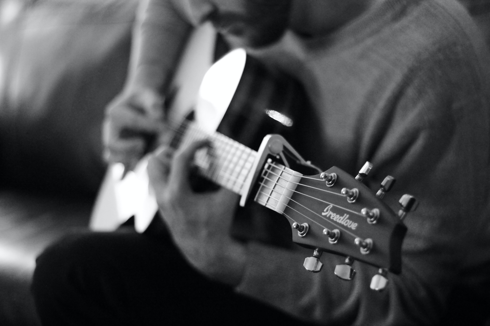

chanson
In its typical specialized usage, the word chanson refers to a polyphonic French song
of the late Middle Ages and Renaissance. The first important composer of chansons
was Guillaume de Machaut, who composed three-voice works in the formes fixes during
the 14th century. Guillaume Dufay and Gilles Binchois, who wrote so-called Burgundian
chansons (because they were from the area known as Burgundy), were the most important
chanson composers of the next generation (c. 1420–1470).
 



Motherland of CHANSON - France